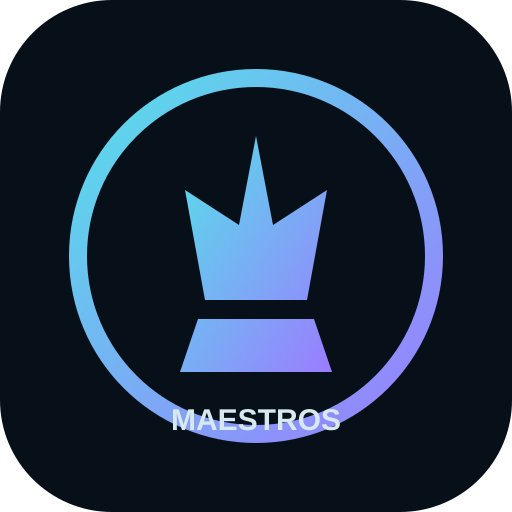

Each Maestro is a dedicated knowledge and play center: biography, style, games, articles, archives, community and a character-driven opponent inspired by the way that master approached chess.
Face a personality-driven opponent instead of another anonymous difficulty level.
Explore signature games, strategic ideas, openings and turning points.
Articles, sources, timelines, archives and curated fan/community material.
Version 0.1 roster. The architecture is designed so the roster can change.
Karpov’s center already has an actual playable character: OLGA. The rest of the site is built as the expandable house around that idea. Each future master can receive a distinct character, voice, teaching logic and game library without rebuilding the whole platform.